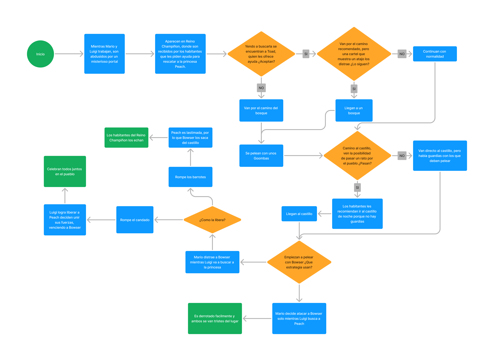
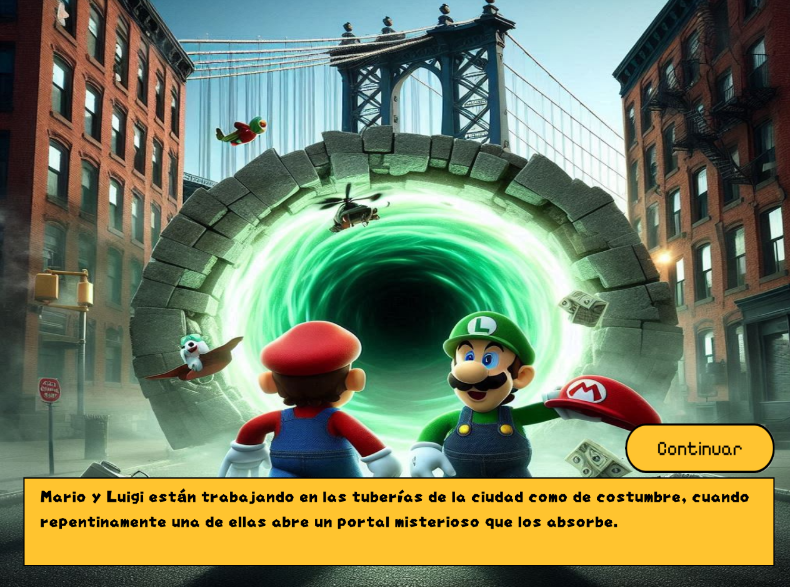
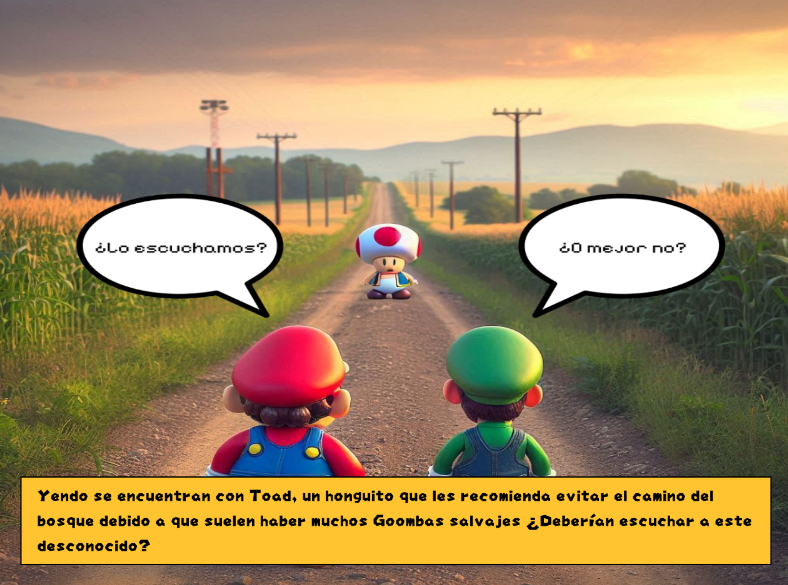
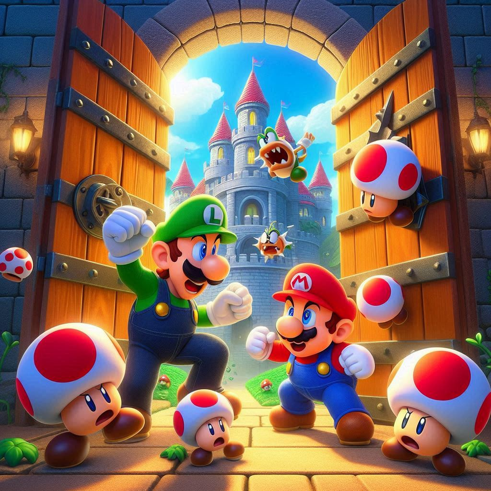
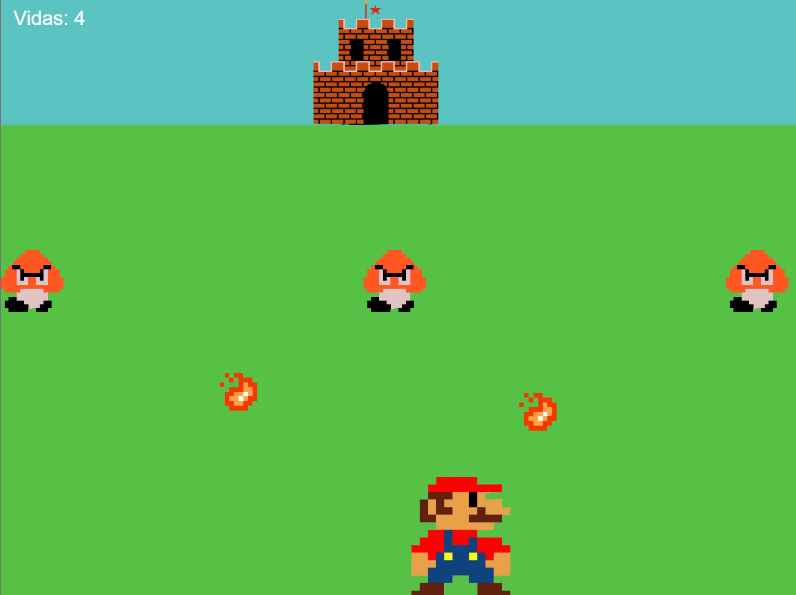

Proceso
Novela grafica
La primera etapa consistía en la creación de una novela gráfica, en la que al lector se le presentaban dos opciones que cambiarían el transcurso de la historia que se estaba contando, al estilo de los antiguos libros de "Elige tu propia aventura".

Para esto, lo primero que hice fue un diagrama en el que organizaba la historia que había creado y las diferentes rutas que se podían elegir, acompañado de las imágenes que iba a utilizar.
Una vez terminé con eso, empecé con el código. Lo primero que hice, y lo que más me costó, fue lograr que las imágenes pasaran en el orden que yo quería.

Sin embargo, lo resolví de una forma simple: enumeré cada imagen según el orden en el que quería que aparecieran e hice una función para aquellas imágenes que debían retroceder o saltar algún número.
Como me gustó la idea sugerida por el profesor, de hacer que los botones de las opciones aparecieran como parte de las imágenes que se estaban mostrando, me enfoqué en la creación de estos.Los representé como diálogos entre los hermanos, ya que, según mi narrativa, ellos debían debatir las opciones que iban a elegir.

Ver novela grafica
Videojuego Web
La segunda etapa pedía la creación de un minijuego con una jugabilidad previamente elegida por el profesor. En mi caso, se solicitaba que el personaje destruyera una base enemiga protegida por enemigos, quienes lo estarían atacando. Me pareció una buena elección para la historia que contaba en la novela, ya que, en uno de los caminos, debes enfrentarte a los Goombas que no te dejan llegar al castillo de Bowser.

Esta etapa tuvo un mejor comienzo que la anterior, ya que pude apoyarme en los videos subidos por la cátedra. Se me empezó a complicar al momento de hacer que los enemigos atacaran al personaje, pero logré resolverlo. Le añadí varias pantallas, una específica para cada uno de los requisitos. Obviamente, seguí la estética del juego original de Super Mario, al estilo pixel art, ya que era perfecta para esto.

Ver videojuego